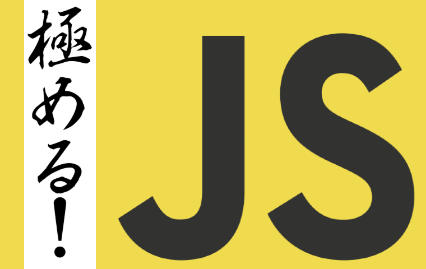

About自己紹介

- 名前: 小川竜司
- 出身: 愛知県
- 生年月日: 1997.4.7
- 趣味: 野球観戦/読書/筋トレ
- 経歴: 航空機部品の製造 → EC会社のWebデザイナー
-
今後の目標: Web制作とWeb開発の両方を極めること。
Webサイトに”付加価値”を与えられるようになること。 - ブログ: 学習ブログ「リュウブログ」を運営
- Twitter/GitHub:
Skillスキル
これまでに学習した言語・ツールです。
より深い理解を目指して日々学習を続けております。


Work作品
これまでに制作した作品です。
画像をクリックすると作品の詳細をご覧いただけます。
-

Numbers Game
-

架空の企業のコーポレートサイト
-

JavaScript作品集
-

ポモドーロタイマー
-

積み上げツイートまとめ
-

ポートフォリオサイト
Blogブログ

日々の学習でエラーが出て解決したことや知識のアウトプットを目的としてブログを書いています。 記事を書く時はエディタを使ってコードを書いて載せたり、CodePenを使ってコードとデモを載せたり 解説する時に図解をしたりと、自分の学習のためだけではなく記事を読むユーザーが分かりやすい内容に することを意識しています。書いた記事はその都度Twitterにアップしてたくさんの人に読んでもらえるよ うにするのと、見出しにキーワードを入れたりaltタグに適切な説明を入れてSEOも意識しています。
ブログを見る